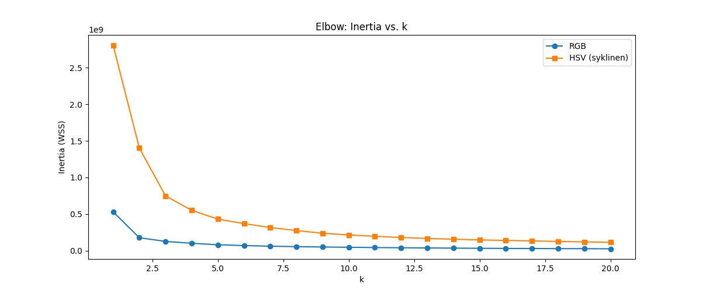
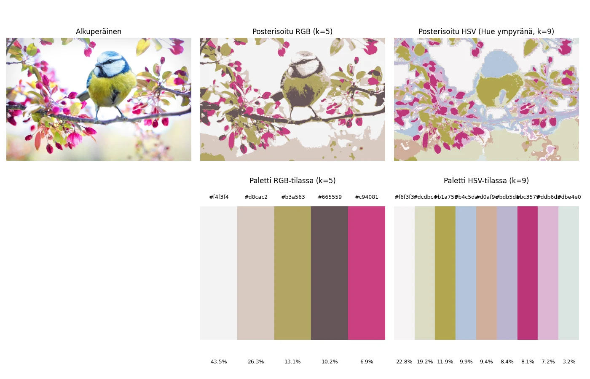
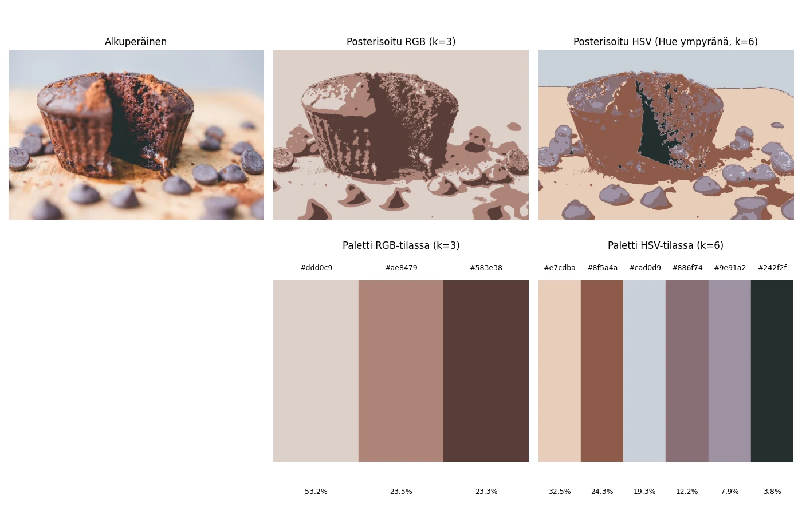
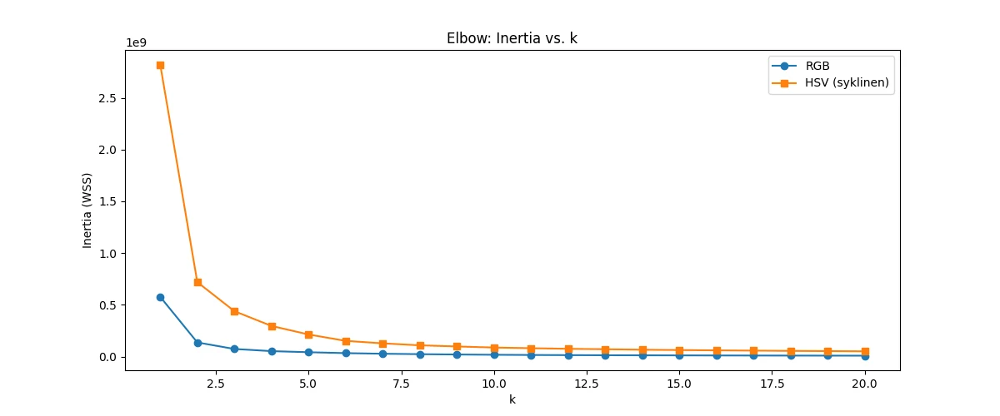

Miten kuvasta syntyy toimiva väripaletti?
Lähdin tutustumaan ja vertailemaan RGB- ja HSV-värimalleja muutamilla eri kuvilla, joista kahden tuloksia esittelen tässä. Tavoitteena oli luoda skripti, joka palauttaa k-arvon mukaisen värikartan annetun kuvan perusteella.
Pikseleistä värikartaksi
k-Means on klusterointialgoritmi eli ohjaamaton koneoppimismenetelmä, joka pyrkii ryhmittelemään havainnot siten, että saman klusterin jäsenet ovat mahdollisimman samanlaisia ja eri klusterit mahdollisimman erilaisia. Jokainen havainto lisätään siihen klusteriin, jonka keskipiste eli centroid on sitä lähimpänä. 1
Hyödynsin kuvien lukemiseen valmista Python-kirjastoa OpenCV. Jokainen pikseli käsiteltiin omana havaintonaan. Toteutin k-Means-algoritmin scikit-learn-kirjaston sklearn.cluster-moduulilla ja muodostin molemmista malleista posterisoidun kuvan sekä väripaletin. Väripaletit järjestettiin värien yleisyyden mukaan ja laskettiin niiden prosenttiosuudet.
RGB vai HSV?
RGB koostuu kolmesta pääkanavasta: punaisesta, vihreästä ja sinisestä. Kaikki muut värit syntyvät yhdistämällä näitä kolmea pääväriä. 2
HSV kuvaa väriä sävyn, kylläisyyden ja kirkkauden avulla: 2
- Hue (sävy) kertoo itse värin, esimerkiksi punaisen tai vihreän. Sävy ilmaistaan kulmana värikehässä.
- Saturation (kylläisyys) kuvaa värin puhtautta. Arvo 0 tarkoittaa harmaata, ja mitä suurempi arvo, sitä voimakkaampi ja ”puhtaampi” väri on.
- Value (kirkkaus) kertoo, kuinka tumma tai vaalea väri on.
Tein kaksi klusterointia alkuun samalla klustereiden määrällä k: RGB-avaruudessa ja HSV-avaruudessa siten, että Hue enkoodattiin syklisesti koordinaatteina (cos H, sin H) ja kylläisyys sekä kirkkaus lisättiin piirteiksi (S, V). Kokeilin myös painotuksia korostaakseni värisävyä suhteessa kirkkauteen.
Syklinen enkoodaus on tärkeä, koska sävy on kulma: OpenCV:n asteikolla arvot 0 ja 179 ovat molemmat punaista, vaikka ne ovat lukuina kaukana toisistaan. Kun sävy muutetaan kosiniksi ja siniksi, k-Means näkee nämä värit lähekkäin:
hsv = cv2.cvtColor(img_rgb, cv2.COLOR_RGB2HSV).astype(np.float32)
H = hsv[..., 0] * (2 * np.pi / 180.0) # OpenCV: H 0..179 → radiaaneiksi
S = hsv[..., 1] / 255.0
V = hsv[..., 2] / 255.0
# Sävy ympyrälle (cos, sin), kylläisyydelle oma painokerroin
X = np.stack([w_H * np.cos(H), w_H * np.sin(H), w_S * S, w_V * V], axis=-1).reshape(-1, 4)
km = KMeans(n_clusters=k, n_init=10, random_state=0)
labels = km.fit_predict(X)
Klusterikeskukset muunnetaan lopuksi takaisin HSV-arvoiksi arctan2-funktiolla, jotta niistä saadaan paletin värit.
Kuinka monta väriä mukaan?
Myöhemmin lähdin etsimään molemmille malleille sopivaa k-arvoa elbow-menetelmällä.
Algoritmin tavoitteena on löytää klusterikeskukset, jotka minimoivat klusterien sisäisen hajonnan eli inertian. 3 Kun klustereiden määrää k kasvatetaan, inertia pienenee, mutta jossain vaiheessa lisäklusterit eivät enää tuo merkittävää parannusta. Tätä voidaan esittää elbow-menetelmällä, josta sopiva k-arvo voidaan päätellä etsimällä niin sanottu ”olkapää”. 4

Bird-kuvassa RGB:n inertia tasaantuu noin k=4–5 kohdalla, kun taas HSV:n inertia loivenee vielä k=7–9 asti. Siksi valitsin vertailuun RGB:lle k=5 ja HSV:lle k=9.
Eri k-arvot eivät siis olleet mielivaltaisia. Valitsin klustereiden määrän kummallekin väriavaruudelle erikseen sen perusteella, missä elbow-käyrä alkoi tasaantua. Väriavaruudet kuvaavat samaa kuvaa eri tavoin, joten myös niiden käyrät saavuttavat hyödyllisen kompromissin eri kohdissa.
Sama menetelmä, kaksi erilaista kuvaa
Bird: tiivis paletti toimi paremmin

Bird-kuvan värikartat ja posterisoidut kuvat. Tässä kuvassa on jo otettu käyttöön korkeampi k-arvo HSV-mallille.
Bird-kuvassa RGB-malli yksinkertaistaa värit selkeämmin ja lopputulos näyttää realistisemmalta. HSV taas erottelee enemmän sävyjä, mutta kuvan vaaleus näyttäisi johtavan siihen, että se painottaa vaaleita alueita, minkä vuoksi linnun yksityiskohdat hukkuvat.
Muffin: rikkaampi paletti toimi paremmin

Muffin-kuvan värikartat ja posterisoidut kuvat.
Tässä on nähtävissä, kuinka HSV-malli rajaa värit tarkemmin ja yksityiskohtaisemmin kuin RGB-malli. HSV-mallin tulos on vähemmän pehmeä, mutta informatiivisempi.

Muffin-kuvassa RGB:n käyrä tasoittuu noin k=3–4 kohdalla ja HSV:n käyrä loivenee noin k=6–8 kohdalla. Siksi käytin esimerkissä RGB:lle k=3 ja HSV:lle k=6.
Mitä ”toimiva” tarkoittaa tässä?
Jos hakisimme Bird-kuvasta esimerkiksi sisustuksen väripalettia, yli yhdeksän sävyä voisi tuntua paljolta, joten näen RGB-mallin toimivan tälle kuvalle paremmin.
Muffin-kuvassa taas sisustuksen väripalettia ajatellen HSV-malli toimi paremmin ja siltä saisi rikkaamman väripaletin.
Käyttötarkoitus voi kuitenkin olla toinenkin kuin sisustus. Bird-kuvassa HSV voisi kertoa RGB:tä paremmin kuvan yleisestä luonteesta, koska se tuo vaaleuden ja sävyjen vaihtelun näkyväksi voimakkaammin. Tällöin HSV:n suurempi klusterimäärä ei ole huono asia, vaan se auttaa kuvaamaan juuri sitä piirrettä, jota haluamme tarkastella. Muffin-kuvassa HSV:n rikkaampi paletti puolestaan säilytti pieniä sävyeroja, jotka RGB tiivisti helpommin yhteen.
Näistä kokeiluista jäi itselleni käteen, ettei toimiva väripaletti tarkoita aina mahdollisimman montaa sävyä. Se syntyy väriavaruuden, elbow-menetelmällä valitun klusterimäärän ja käyttötarkoituksen yhteensovittamisesta. Sama kuva voi siis tarvita eri vastauksen sen mukaan, halutaanko siitä tiivis käyttöpaletti vai kuvan valoisuutta ja sävyvaihtelua kuvaava esitys.
Kirjoituksen tausta
Kirjoitus on toimitettu Johdatus koneoppimiseen -oppimispäiväkirjani värikarttamerkinnästä. Kuvat esittävät siinä käsiteltyjen kokeilujen tuloksia. Koodikatkelma on lyhennetty ote omasta värikarttaskriptistäni. Kurssimateriaali: Jani Sourander. 5
Lähteet
-
GeeksforGeeks. K-means clustering – Introduction. Verkkolähde. 2025 ↩
-
GeeksforGeeks. Difference Between RGB, CMYK, HSV, and YIQ Color Models Verkkolähde. 2025 ↩↩
-
Scikit-learn. Clustering. Verkkolähde ↩
-
StatQuest with Josh Starmer. StatQuest: K-means clustering. YouTube. Verkkolähde. 2018 ↩
-
Jani Sourander. Johdatus koneoppimiseen -verkkomateriaali. Verkkolähde ↩